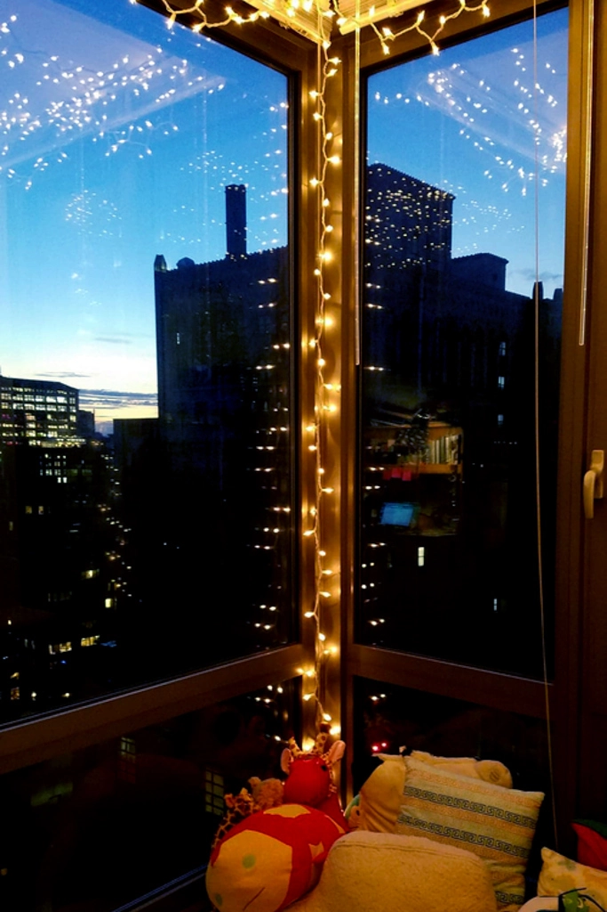
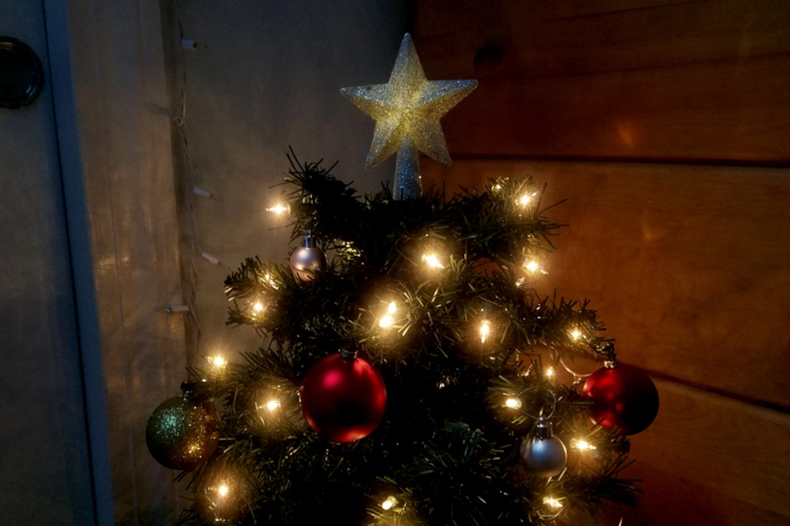
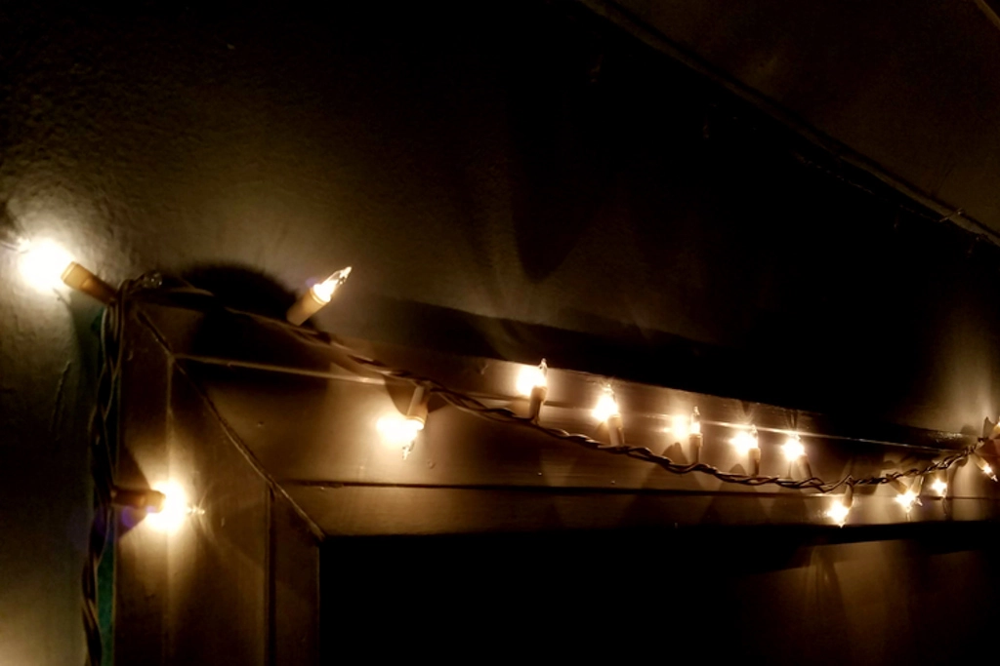

Best Places to Shop for Holiday Decor
Dec 13 - Written by Bonnie and Emily
It’s that time of the year again where we get to go all out with those holiday decorations and make our homes all festive and cozy.
If you don’t already have a collection of decorations from past holidays, then you’re probably wondering where you should go to get yourself some. Well, we got you covered with a list of our favorite places to shop during the holiday season for cute and affordable decor.
Target
First up, we have everyone’s favorite, Target. From all the nifty items in their dollar section to their classic holiday section in their stores, you’re bound to find some cute things to spruce up your room. Some of our favorite items throughout the years include their classic Christmas lights and their holiday throw pillows. If you’re ever in need of a quick and easy way to make your living room more festive, just pick up a few festive pillows at Target, pair it with some cozy throw blankets and hang up some string lights. Just adding these few touches to your room can make a huge difference.
Another favorite of ours is their mini Christmas tree collection as well as their ornaments and stockings. Even if you don’t have a Christmas tree, you can still put up ornaments! The past few years, we have tied some ribbon to ornaments and hung them up at varying heights by our windows and even from the ceiling. Target’s Wondershop is definitely a one stop shop for all your holiday needs.
Primark
Similar to Target, Primark has a wonderful collection of affordable holiday decor. Though their selection isn’t quite as large at Target, there are still some cute finds. We picked up these cute reindeer string lights a few years back and they add the perfect touch of cute and festiveness to any area of your home. Since they are quite short, we found its best to find an area of your home that’ll suit this well, like hanging from a bookshelf, whiteboard, and possibly even from your window.
Michaels
Now if you’re into crafts and want to get a little more creative this holiday season, check out Michaels for both decor and supplies to DIY your own. We all know fireplaces in the winter are a must; however, most of us don’t have a fireplace in our homes. So if you’re willing to give up the heat and want the aesthetics of a fireplace, grab yourself some construction paper and you can build your own cute and affordable fireplace. We did this a few years back when we were living in dorms and didn’t have much to work with, but it turned out real cute and made the place feel extra homey.
Speaking of DIY’s, a fun and very affordable way to decorate your home is by making your own paper snowflakes and hanging them from the ceiling or just on the wall. You can also grab yourself a box of candy canes and hang them around your home, just try your best not to eat them all.